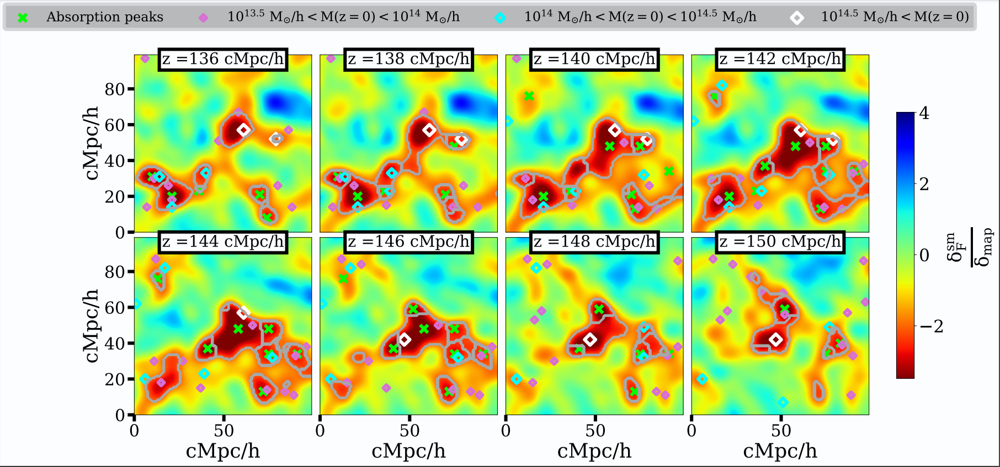
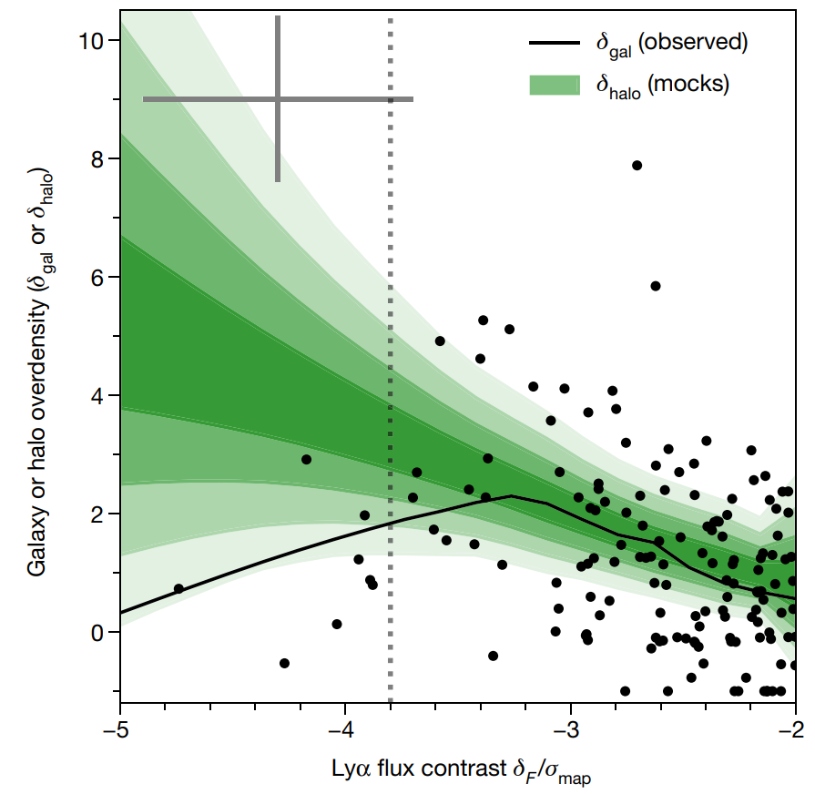

Astrophysics Research
Publications, project summaries, and demos from my observational and simulation work.
Protoclusters and protogroups in 3D Ly-alpha tomographies

Forecasting the capability of 3D Lyα tomographies for detecting progenitors of galaxy clusters and groups. Paper
Ultraviolet-dim protoclusters detected in absorption

Discovery of UV-dim protoclusters with implications for galaxy formation. Paper